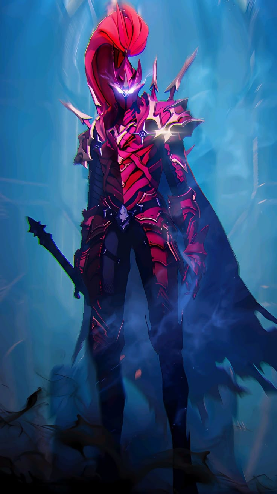
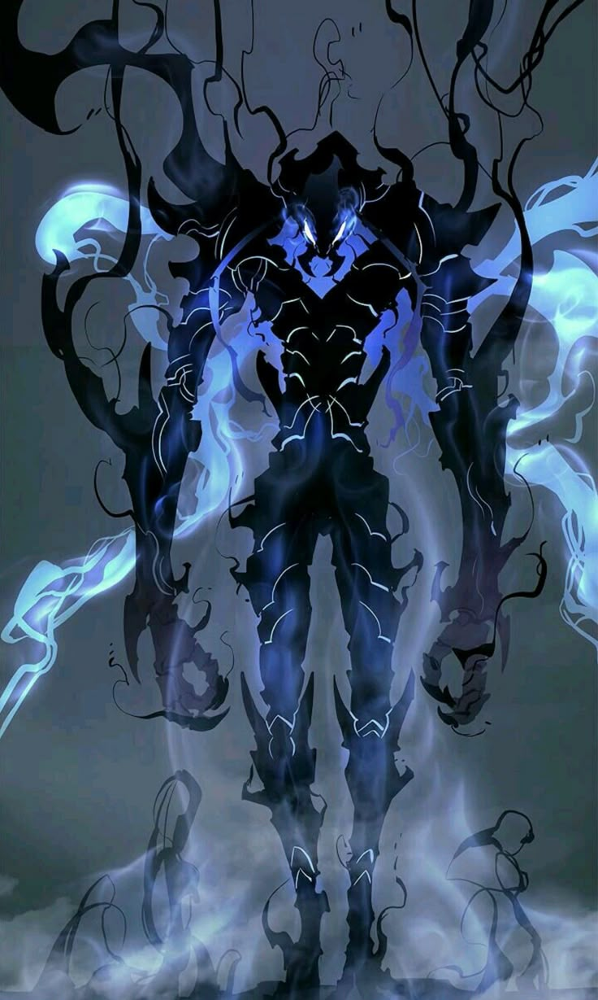
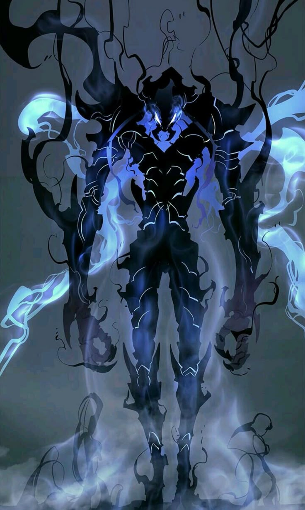

Solo Leveling es uno de los webtoons coreanos más populares y ahora ha recibido oficialmente su tan esperada adaptación al anime, desatando el crecimiento épico y los temibles poderes de Sung Jin-woo en las pantallas. Las batallas son intensas y visualmente dinámicas, especialmente en el formato webtoon, donde el estilo artístico da vida a cada pelea con vívidos detalles. Ahora, los fanáticos finalmente podrán ver momentos icónicos de Webtoon animados.

El cazador más débil de todos era Sung Jinwoo, pero cuando casi muere en una mazmorra, aparece una pantalla que le ofrece una nueva misión y pasa por un segundo despertar. Con lo que gana nuevas habilidades que le permiten "subir de nivel" y enfrentarse a mazmorras y enemigos muchos más peligrosos de lo que nunca antes se había planteado..
 
